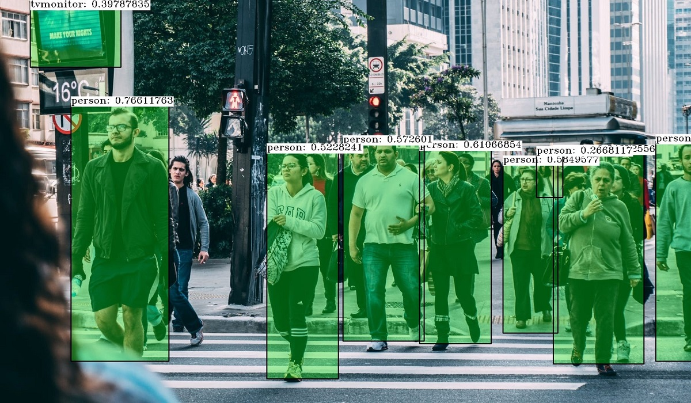

¿Que es la Inteligencia Artificial?
La inteligencia artificial (IA) es un campo de la informática que se centra en crear sistemas que puedan realizar tareas que normalmente requieren inteligencia humana.
Se basa en la combinación de algoritmos para crear máquinas que tengan capacidades similares a las de los seres humanos.
Usos Mas Comunes de la IA
- Sistemas Automatizados
- Campo de la Robotica
- Videojuegos
- Campos de Informatica
- Recabacion de Informacion por parte de Usuarios
- Asistentes Virtuales
- Deepfake
- Reconocimiento de objetos y escenas 
Ejemplos


La Importancia de la IA
Automatiza el aprendizaje ademas de analizar datos e informacion con precision ademas de adaptarse a algunos algoritmos de aprendizaje.
En Algun futuro la IA sera capaz de crear aun mas sistemas funcionales y mejor hechos para la comodidad humana.